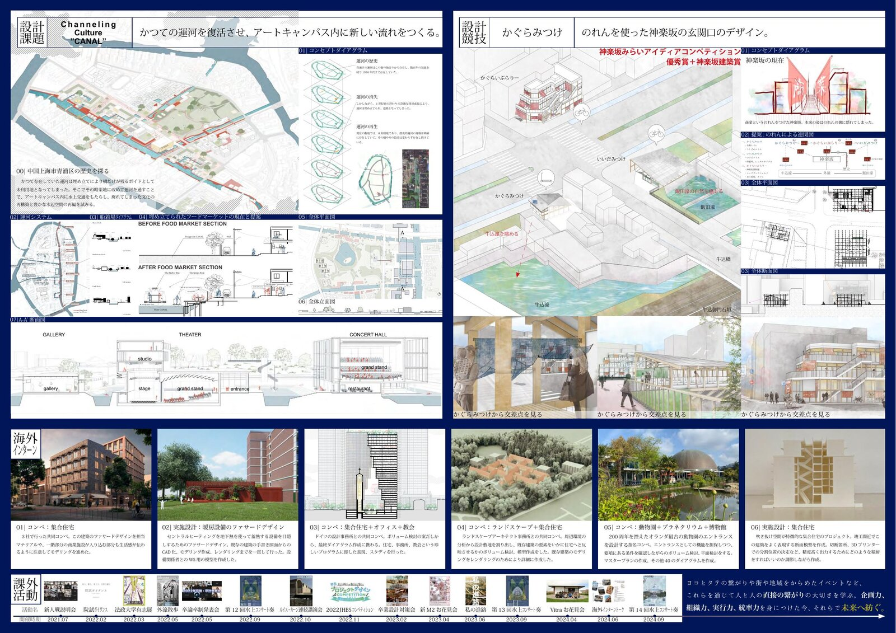

2022 · Design Studio · Shanghai International Workshop
Channeling Culture Canal
Qingpu District, Shanghai中国・上海市青浦区
Qingpu Old Town in Shanghai has a canal system that dates back hundreds of years, forming the very backbone of its urban structure. During rapid economic development in the late 20th century, these canals were filled in and converted into roads — leaving only bridges and level changes as traces of the water that once flowed through the district.
上海市青浦区の旧市街には、数百年の歴史を持つ運河が存在し、都市構造の骨格を形成してきた。しかし20世紀後半の急激な経済成長の中で、運河は埋め立てられ道路へと変わり、橋と地面の段差だけがその痕跡として残された。
This international group project — developed with students from Switzerland, Denmark, China, and Japan — proposes the restoration of the historical canal as the organizing spine of a new art campus. The canal is not simply revived as water, but reimagined as a multi-layered public infrastructure connecting gallery, theater, concert hall, market, and residential uses.
スイス・デンマーク・中国・日本の学生による国際グループワーク。歴史的運河をアートキャンパスの軸として復元する提案。運河は単に水路として再生されるのではなく、ギャラリー・劇場・コンサートホール・マーケット・住居をつなぐ多層的な公共インフラとして再定義された。
The design operates through three moves: Restoring the main canal axis that connects the site inside and outside; Connecting dimensions by layering dock sections, public terraces, and underground routes; and Creating Surfaces — new ground planes that dissolve the boundary between canal and campus.
設計は三つの操作で構成される。①運河の復元：敷地内外をつなぐ主軸運河と枝分かれする小運河の再生。②次元の接続：船着場断面・公共テラス・地下通路の重ね合わせ。③面の創出：運河とキャンパスの境界を溶かす新たなグランドレベルの設定。

Presentation sheet (left panel of A3 spread)作品シート（A3左面）